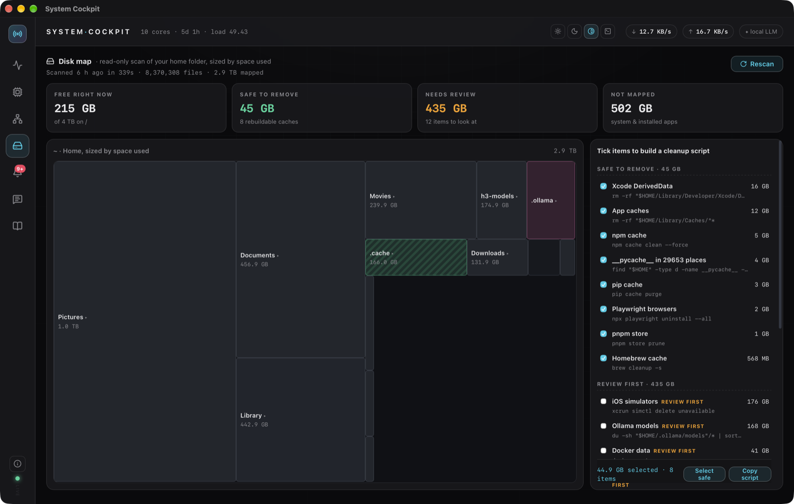
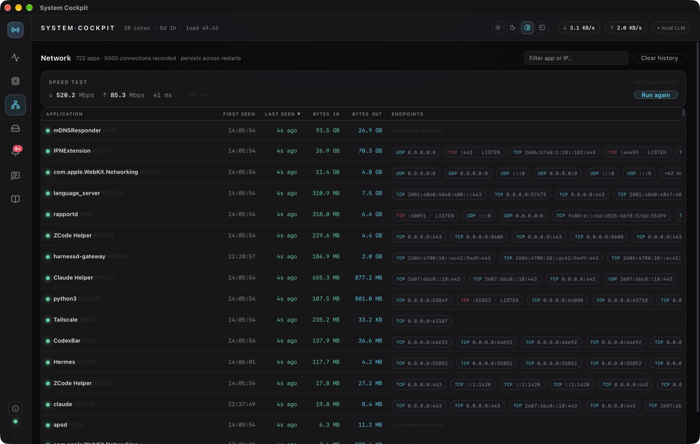
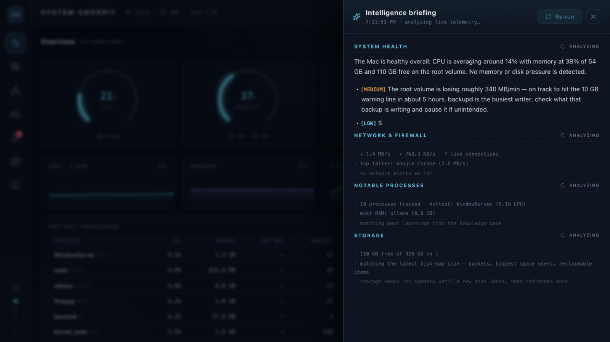

Live gauges, a read-only disk map, a per-app network ledger and an AI intelligence briefing — in a 4.6 MB app that renders with macOS's own engine and never phones home.
On an Intel Mac? Download for Intel (~5 MB)
Activity Monitor tells you what is happening. System Cockpit tells you what it means — next to the numbers, in plain language.
CPU, memory, disk and swap gauges with 4-minute sparklines. A Rust collector samples twice a second and streams to the UI over IPC.
A treemap of your home folder sized by space used, with severity-tagged findings. It never deletes — cleanup only via a script you inspect and run yourself.
Every app that ever moved a packet — bytes in/out, first and last seen, live socket endpoints. Persists across restarts; the table is virtualized so thousands of apps scroll like ten.
Real download/upload/ping against Cloudflare's edge with live per-phase progress — and if you hit a rate limit, your last result stays on screen while a Retry-After countdown arms.
Four sections — health, network, processes, storage — written by the model you point it at, with severity-tagged findings that link to the evidence.
"Why is the disk filling up?" "Anything unusual on the network?" Ask in plain language; answers stream from your local model, grounded in live telemetry.
Runaway CPU, disk-drain rates, memory growth, suspicious connection fan-out — each with a one-click plain-language explanation, persisted locally.
A local knowledge base feeds what past briefings learned into future ones — so recurring suspects get recognized, not re-discovered.
Apple Intelligence on-device (macOS 26+ — no download, nothing sent), a local Ollama, or any OpenAI-compatible endpoint. Switch from the ⚙ gear in the top bar — from any tab; the Copilot header always shows what's live.
The disk map walks your home folder, sizes everything by space used and tags the findings worth knowing — the big, the stale and the weird. What it never does is delete. When you want something gone, it writes a cleanup script for you to read, edit and run yourself.


Every application that has moved a single packet, with bytes in and out, first-seen and last-seen timestamps, and its live socket endpoints — filterable by app, address or port. It survives restarts, so last Tuesday is still one query away.
Four sections — system health, network & firewall, notable processes, storage — written by the model you point it at — Apple Intelligence on-device, a local Ollama, or an API endpoint. Findings carry severity tags and reference the numbers they came from. Your telemetry goes to your endpoint, to your Mac, or nowhere at all.

No analytics, no crash reporter, no accounts, no update beacon. Your data lives in plain JSON you can open, back up or delete. The only network touches are the speed test and the model endpoint you configure — both only when you click.
A Rust core and macOS's own WebKit renderer — so the whole product weighs less than a photo.
No. Everything works offline except the speed test and briefings/Copilot — and if you pick Apple Intelligence, those run on-device too.
~/Library/Application Support/com.kiran.cockpit/ — plain JSON: network ledger, disk map, alerts, copilot history. Inspectable, back-up-able, deletable.
No. The disk map is read-only by design. The only path to deletion is a script the app writes out for you to review and run yourself.
Only the telemetry snapshot the app already shows you — health metrics, process table, network summary, storage digest — to the endpoint you configure. With Apple Intelligence selected it never leaves the Mac. Configure none, and nothing leaves your Mac.
Yes — a native Intel build ships alongside the Apple Silicon one. The buttons default to Apple Silicon; use the "Download for Intel" link and you're covered back to ~2018 Intel Macs on macOS 14 (Sonoma) or newer.
Developer ID signed with hardened runtime, notarized by Apple and stapled — it installs with no Gatekeeper warnings.
4.6 MB DMG (Apple Silicon) · ~5 MB (Intel) · signed, notarized and stapled · no installer, no LaunchAgents, no kext.